EXPERIENCE WITH


 

Hi! I'm a 16-year-old software development student from the Netherlands,
currently in my first year of MBO4. I recently started my journey in coding
and I'm really excited about learning how to build websites, apps, and cool projects.
I enjoy experimenting, trying out new ideas, and improving a little bit every day.
This portfolio is where I'll share what I'm working on and how I'm growing as a developer.

As a Senior Software Engineer at Google, I played a pivotal role in developing innovative solutions for Google's core search algorithms. Collaborating with a dynamic team of engineers, I contributed to the enhancement of search accuracy and efficiency, optimizing user experiences for millions of users worldwide.
During my tenure at Apple, I held the role of Software Architect, where I played a key role in shaping the architecture of mission-critical software projects. Responsible for designing scalable and efficient systems, I provided technical leadership to a cross-functional team.
At Meta, I served as a Software Engineer, focusing on the design and implementation of backend systems for the social media giant's dynamic platform. Working on projects that involved large-scale data processing and user engagement features, I leveraged my expertise to ensure seamless functionality and scalability.